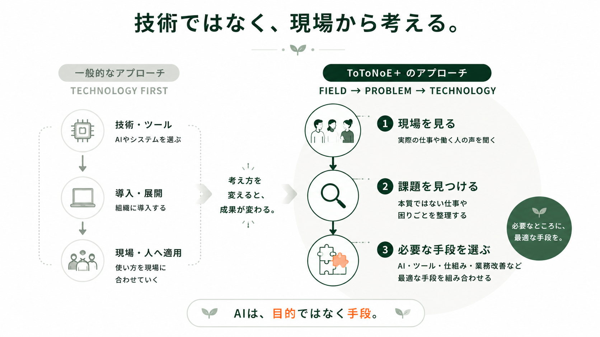
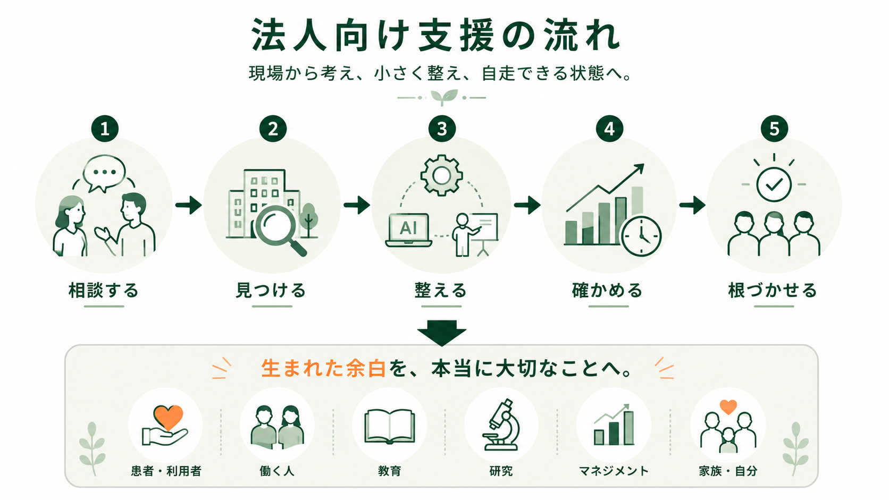
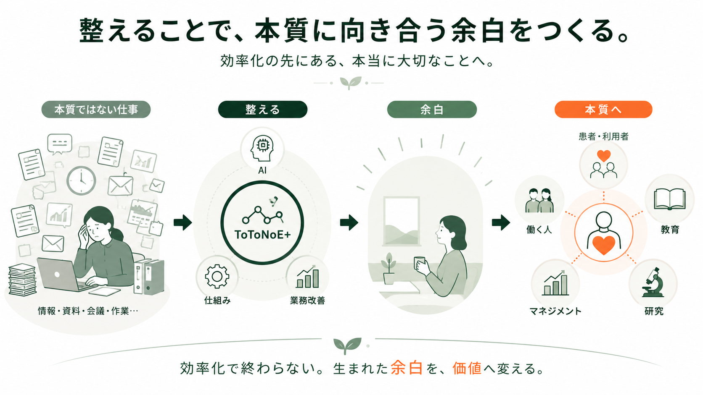

書類・資料作成
作成や転記に時間がかかり、本来の仕事に集中しづらい。
FOR ORGANIZATION
医療・介護、産業保健の現場から課題を整理し、AI・仕組み・業務改善を必要なところだけ。専門職が、本当に大切なことへ向き合える余白をつくります。
PROBLEM
作成や転記に時間がかかり、本来の仕事に集中しづらい。
会議後の整理や共有が負担になり、次の行動につながりにくい。
人によって方法が違い、必要な情報が探しにくい。
現場の知恵が属人化し、育成や引き継ぎに時間がかかる。
使ってみたいが、安全な使い方や現場での使いどころが分からない。
課題は感じているが、何から始めればいいか分からない。
解決方法が決まっていなくても大丈夫です。まずは、今の現場を一緒に整理します。
APPROACH
ToToNoE+の法人向け支援は、AIやツール導入から始めません。現場で起きていることを知り、課題を整理した上で、必要な手段だけを選びます。

SUPPORT FLOW
相談する、見つける、整える、確かめる、根づかせる。一度きりの改善ではなく、自分たちで整え続けられる状態を目指します。

PROGRAM
パッケージをそのまま当てはめるのではなく、無料相談で現場の状態を確認し、必要な支援だけを組み合わせます。
記録、情報共有、教育、広報、採用導線など、専門職が本来の支援に集中しづらくなっている業務を整理します。
面談、報告、資料作成、健康施策の企画など、働く人を支える現場で生まれる情報整理と実装を支援します。
現場の声、業務の流れ、困りごとを整理し、改善テーマを見える化します。
AIリテラシー、情報整理、資料作成など、現場で使える形に落とし込みます。
Google Workspace、GAS、AI活用を必要な範囲で組み込み、日々の業務に接続します。
運用ルール、担当者育成、振り返りまで整え、自分たちで続けられる状態へ近づけます。
ゴールは、外部に頼り続けることではなく、現場の中に整え続ける力を残すこと。
TWO DOMAINS
医療・介護と産業保健の双方を理解し、専門性を往来させるチームとして、現場に合った支援を設計します。

クリニック、介護施設、デイサービス、訪問系事業所など、医療・介護現場の業務整理とAI活用を支援します。
医療・介護向け無料相談 →産業保健職、人事・労務、健康経営、人的資本領域など、働く人を支える現場の情報整理と実装を支援します。
産業保健向け無料相談 →OUTCOME

効率化で終わらない。生まれた余白を、価値へ変える。
FREE CONSULTATION
今どんなことに困っているか。何に時間がかかっているか。本当は何に時間を使いたいか。その場で契約を決める必要はありません。
AFTER CONSULTATION
課題に合わせて、必要な支援だけをご提案します。
FAQ
はい。相談の段階では、課題が明確でなくても大丈夫です。現状を伺いながら、一緒に整理します。
前提ではありません。現場の課題を整理した上で、AIが必要な場合だけ手段として検討します。
可能です。AIリテラシー、情報共有、業務改善など、目的に合わせて研修を設計します。
医療機関、介護事業所、産業保健に関わる企業・チームなど、専門職が働く現場を中心に支援します。
必要ありません。相談後に必要な支援がある場合のみ、ご提案とお見積りを行います。
AIを使うかどうかも、どの支援が必要なのかも、最初から決まっていなくて大丈夫です。まずは今の現場について聞かせてください。